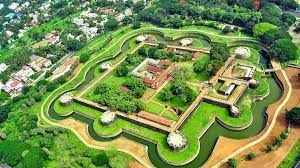

Palakkad, often referred to as the "Gateway of Kerala," is a charming city in the southern Indian state of Kerala. It is known for its picturesque landscapes, rich cultural heritage, and historical significance.
Palakkad is renowned for its traditional art forms, including Kathakali and Mohiniyattam. These classical dance forms are integral to the cultural heritage of the region.
Palakkad is famous for its agricultural products, particularly rice and spices. The region is known for its high-quality rice varieties and a wide range of aromatic spices.
Palakkad enjoys a tropical wet and dry climate. It experiences hot and dry weather during the summer months and relatively cooler and wetter conditions during the monsoon season.